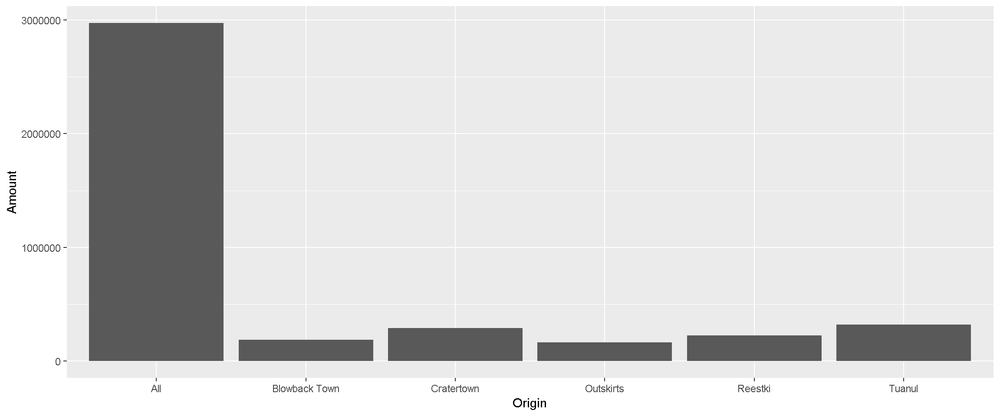

R Training | Day 1

1 | A new day
Welcome to Jakku! You’ve just in time. The Junk boss Unkar is being an awful meany-pants and has started skimping on rations. And Rey needs some parts to build a star ship to escape Jakku and fight with the New Republic. Luckily for us, BB8 was able snag a transfer log from Unkar’s droid showing all of his recent shipments. Let’s power on our Datapad and see if we can’t make some trouble for Unkar and track down the parts we need.
Start a new project
- In Rstudio select File from the top menu bar
- Choose New Project… > New Directory > New Project
- Enter a project name such as
"junk data" - Select Browse… and choose a folder where you store your data work
- Ignore the rest and jump down to click Create Project
Get the data
- Create a new
datafolder in your project folder - Move the data you downloaded above to it
1.1 R scripts
An R script is where you write R code and document your work. They’re like recipes or prescriptions that tell the computer what you want to happen to your data.
Open a new R script
- In the upper left, click on the white file icon with the green (+) sign.
- Select R Script.

Save script
- Click on the floppy disk icon
- Enter a file name such as
starwars_code.R
1.2 A tour of RStudio

1. Code editor
This is where you can edit your R scripts. The tabs at the top of the code editor allow you to view scripts and data sets you have open. You can press CTRL+ENTER to run a block of code in your R script. We’ll spend most of our time here. It’s the homebase in RStudio.
2. Console
This is where code is executed by the computer. It shows code that you have run and any errors, warnings, or other messages that result. You can input code directly into the console and run it, but it won’t be saved for later. That’s why we like to run all of our code directly from a script in the code editor above.
3. Workspace
This pane shows all of the objects and functions that you’ve created, as well as a history of the code you’ve run during your current session. The environment tab shows all of the data, objects and functions that you’ve loaded. Note the broom icon below the Connections tab. This cleans shop and allows you to clear out all of the objects in your work space.
4. Plots and files
These tabs allow you to view and open files in your current directory, view plots and other visual objects like maps, view installed packages, and access the Help window. If at anytime you’re unsure what a function or package does, enter it’s name after a question mark in the console. For example, try typing ?mean in the console and then pressing ENTER.
Help!
Learn more R
- In your browser: DataCamp Intro
- RStudio lessons: https://rstudio.github.io/learnr/examples.html
- RStudio videos: https://tutorials.shinyapps.io/04-Programming-Basics/#section-welcome
- Learn inside R: swirlR
- Coursera classes: John Hopkins courses w/ Roger Peng
Books
- R for Data Science: comprehensive & free book online
- R Cookbook: https://www.cookbook-r.com
Searching online
- google.com: include
rorrstats+the question - stackoverflow.com + use the
[r]tag
R community
- R Bloggers: https://www.r-bloggers.com/
#rstatson Twitter- R Ladies: https://rladies.org/
You are not alone in this universe
Growth of R Ladies groups
1.3 Make it like home
Let’s add some of our own style so we feel more at home. Follow these steps to change the font-size and color scheme:
- Go to Tools on the top navigation bar.
- Choose
Global Options... - Choose
Appearancewith the paint bucket. - Find something you like.
- Try ‘solarized dark’ when you’re ready to embrace winter.
- The default font and theme are ‘Lucida Console’ and ‘TextMate’.
2 | First steps
You can assign values to new objects using the “left arrow” <-, more officially known as the assignment operator. Try adding the code below to your R script and creating an object called droid.
To run a line of code in your script, move the cursor to that line and press CTRL+ENTER.
# Create a new object
droid <- "bb8"
droid
wookie <- "Chewbacca"
wookie
# To save text to a character object you need quotation marks: "text"
# Try this:
wookie <- Chewbacca
# Without quotes, R looks for an object called Chewbacca, and then lets you know that it couldn’t find one. # To copy an object save it to a new name.
wookie2 <- wookie
# Or overwrite an object
wookie <- "Tarfful"
wookie
# Did this change the value stored in wookie2?
wookie2 Drop and remove data
You can drop objects with the remove function rm(). Try it out on some of your wookies.
# Delete objects to clean-up your environment
rm(wookie)
rm(wookie2)
# How can we get the 'wookie' object back?
# Hint: The UP arrow is your friend.GOOD NEWS: Deleting data is okay
Don’t worry about deleting data or objects, you can always recreate them! And when R loads data files it only copies the contents. All your original data files remain safe and won’t suffer from any accidental changes. If something disappears or goes wrong in R, it’s okay. You can always reload the data using your script.
2.1 Give it a name
Everything has a name in R and you can name things almost anything you like. You can even name your data TOP_SECRET_shhhhhh... or Luke_I_am_your_father or data_McData_face.
Sadly, there are a few minor restrictions. Names cannot include spaces or special characters that might be found in math equations, like +, -, *, \, /, =, !, or ).
Exercise!
Try running some of these examples in your R console. Find new ways to create errors. The more broken the more better!
n wookies <- 5
n*wookies <- 5
n_wookies <- 5
n.wookies <- 5
all_the_wookies! <- "Everyone on Kashyyyk"# You can add one wookie
n_wookies <- n_wookies + 1
# But what if you have 10,000 wookies?
n_wookies <- 10,000
# They also cannot begin with a number.
1st_wookie <- "Chewbacca"
88b <- "droid"
# But they can contain numbers!
wookie1 <- "Chewbacca"
bb8 <- "droid"EXPLORE: What happens when we create n_wookies the second time?
When we create a new object that has the same name as something that already exists, the new object replaces the old one. Sometimes we’ll want to update an existing object and replace the old version. Other times we may want to copy an object to a new name to preserve the original. This is similar to choosing between Save and Save As when we save a file.
2.2 Multiple items
We can add multiple values inside c() to make a vector of items. It’s like a chain of items, where each additional item is connected by a comma. The c stands for to concatenate or to combine values into a vector.
Let’s use c() to create a few vectors of names.
# Create a character vector and name it starwars_names
starwars_names <- c("Luke", "Leia", "Han Solo")
# Print starwars_names to the console
starwars_names## [1] "Luke" "Leia" "Han Solo"# Create a numeric vector and name it starwars_ages
starwars_ages <- c(19,18,25)
# Print the ages to the console
starwars_ages## [1] 19 18 252.3 Make a table
A table in R is known as a data frame. We can think of it as a group of columns, where each column is made from a vector. Data frames in R have columns of data that are all the same length.

Let’s make a data frame with two columns to hold the names and ages of our characters from above.
# Create table with columns "names" and "ages" with values from the starwars_names and starwars_ages vectors
starwars_df <- data.frame(names = starwars_names,
ages = starwars_ages)
# Print the starwars_df data frame to the console
starwars_df## names ages
## 1 Luke 19
## 2 Leia 18
## 3 Han Solo 25Exercise!
Create the same table above with a 3rd column showing their father’s names:
c("Darth", "Darth", "Unknown")
Get values from a $column_name
Use the $ sign after the name of your table to see the values in one of your columns.
# View the "ages" column in starwars_df
starwars_df$ages## [1] 19 18 25Pop Quiz, hotshot!
Which of these names are valid for a new object? (Hint: You can test them.)
my starwars fandom
my_wookies55
5wookies
my-wookie
Wookies!!!
Show solution
my_wookies55
Yes!! The FORCE is strong with you!
2.4 Leave a #comment
The text in the scripts with the # in front are called comments. A line that starts with a # is ignored and won’t be run as R code. You can use the # to add notes in your script to make it easier for others and yourself to understand what is happening and why. You can also use comments to add warnings or instructions for others using your code.
2.5 Functions
Now that you know what objects are and how to create them, let’s learn how to use them in functions. Functions take one or more inputs called “arguments”. They perform steps based on the arguments and usually return an output object.
Clone Trooper function
You can think of a function like a plan for making Clone Troopers.

create_clones(host = "Jango Fett",
n_troopers = 2000)The function above creates Clone Troopers based on two arguments: the host and n_troopers. When we have more than one argument, we use a comma to separate them. With some luck, the function will successfully return a new object - a group of 2,000 Clone Troopers.
The sum() function
We already covered two functions: c() and data.frame(). Now let’s use the sum() function to find the sum age of our Star Wars characters.
# Call the sum function with starwars_ages as input
ages_sum <- sum(starwars_ages) # Assigns the output to starwars_ages_sum
# Print the starwars_ages_sum value to the console
ages_sum## [1] 62The sum() function takes the starwars_ages vector as input, performs some calculations, and returns a single numeric object. Note that we assigned the output object to the name ages_sum. If we don’t assign the output object it will be printed to the console and won’t be saved. Sometimes that’s what we want, especially when we’re exploring the data.
# Alternative without assigning output
sum(starwars_ages) ## [1] 62starwars_ages## [1] 19 18 25NOTE: The original
starwars_agesvector hasn’t changed. Each function has its own “environment” and its calculations happen inside a bubble. In general, what happens inside a function won’t change your objects outside of the function.
Function summary
There are functions in R that are more complex but most boil down to the same general setup:
new_output <- function(argument_input1, argument_input2)We call a function and then add input arguments inside the parentheses. In exchange, the function returns an output object. You can make your own functions in R and name them almost anything you like, even my_amazing_starwars_function().
EXPLORE: What arguments does my function have?
Functions often have more than one argument. Type ?read_csv into your console to see help in the lower-right pane that describes all of the function’s arguments and what they do.
Many of the options have default arguments (such as col_names = TRUE) that the function uses if you don’t provide an alternative. A short scroll down in the help window will show you more details about the arguments and the values they take.
function(arg1 = input1, arg2 = input2, arg3...)
The file argument tells us that the function expects a path to a file. It can be given many types of files, even a ZIP file. Below that, you’ll see the col_names argument. This argument takes either TRUE, FALSE, or a character vector of column names. The default is TRUE, which means the first row in the CSV will be used for the column names of your table.
Pop Quiz!
Which of these is a valid function call?
train(“concentrate” “Force”)
shoot, “lightsaber”, “Death Ray”
replicate(100000000, “clones”)
fight(until Empire conquered)
scrap(100 Datapads, “Hyperdrives”)
Show solution
replicate(100000000, "clones")
Correct! You are ready to audit a Junk dealer.
3 | Read data
The first step of a good scrap audit is reading/loading some data and figuring out where all the scrap is going. Here is a small dataset showing the scrap from Jakku. It was salvaged from a crash site and the transfer was incomplete.
| source | destination | item | quantity | price |
|---|---|---|---|---|
| Coruscant | Jakuu | hyperdrives | 3 | 300 |
| Tatooine | Jakuu | datapads | 100 | 25 |
| Naboo | Jakuu | hyperdrives | 45 | 45 |
| Endor | Jakuu | hyperdrives | 1 | 10000000 |
New Message (1)
Incoming… BB8
BB8: Beep boop Beep.
BB8: I intercepted a large scrapper data set from droid 4 of Junk Boss Plutt.
Receiving data now…
View data
scrap_records.csv
Salvage,Origin,Dest,Amount,Units,Price_per_Ton
Flight recorder,Outskirts,Niima Outpost,887,Tons,590.93
Proximity sensor,Outskirts,Raiders,7081,Tons,1229.03
Aural sensor,Tuanul,Raiders,707,Tons,145.27
Electromagnetic filter,Tuanul,Niima Outpost,107,Tons,188.2
... You: This looks like a mess! What do I do with this BB8?
3.1 CSV to the rescue
The main data format used in R is the CSV (comma-separated values). A CSV is a simple text file that can be opened in R and most other stats software, including Excel. It looks squished together as plain text, but that’s okay! When opened in R, the text becomes a familiar looking table with columns and rows. But before we launch ahead, let’s add a package to R that will help us read CSV files.
How to save a CSV from Excel
Step 1: Open your Excel file.
Step 2:
- Go to File
- Save As
- Browse to your project folder
- Save as type: _CSV (Comma Delimited) (*.csv)_
- Any of the CSV options will work
- Any of the CSV options will work
- Click Yes
- Close Excel (Click “Don’t Save” as much as you need to. Seriously, we just saved it. Why won’t Excel just leave us alone?)
Return to RStudio and open your project. Look at your Files tab in the lower right window. Click on the CSV file you saved and choose View File. Success!
4 | A new package 📦
A package is a small add-on for R like a phone App for your phone. Packages add capabilities like statistical functions, mapping powers, and special charts. In order to use a new package we first need to install it.
4.1 readr

The readr package helps import data into R in different formats. It does extra work for you like cleaning the data of extra white space and formatting tricky dates. Your packages are stored in your R library.
Add a package to your library
- Open RStudio
- Type
install.packages("readr")in the lower left console - Press Enter
- Wait two seconds
- Open the
Packagestab in the lower right window of RStudio to see the packages in your library- Use the search bar to find the
readrpackage
- Use the search bar to find the
The packages tab only shows the available packages that are installed. To use one of them, you will need to load it. Loading a package is like opening an App on your phone. To load a package we need to use the library() function. After loading the readr package you can read the Jakku scrap data with the brand new function read_csv().
4.2 Read the data
library("readr")
read_csv("data/starwars_scrap_jakku.csv")## Parsed with column specification:
## cols(
## Salvage = col_character(),
## Origin = col_character(),
## Dest = col_character(),
## Amount = col_integer(),
## Units = col_character(),
## Price_per_Ton = col_double()
## )## # A tibble: 222 x 6
## Salvage Origin Dest Amount Units Price_per_Ton
## <chr> <chr> <chr> <int> <chr> <dbl>
## 1 Flight recorder Outskir~ Niima Out~ 887 Tons 591.
## 2 Proximity sensor Outskir~ Raiders 7081 Tons 1229.
## 3 Vitus-Series Attitude T~ Reestki Raiders 4901 Tons 226.
## 4 Aural sensor Tuanul Raiders 707 Tons 145.
## 5 Electromagnetic dischar~ Tuanul Niima Out~ 107 Tons 188.
## 6 Proximity sensor Tuanul Trade car~ 32109 Tons 1229.
## 7 Hyperdrive motivator Tuanul Trade car~ 862 Tons 1485.
## 8 Landing jet Reestki Niima Out~ 13944 Tons 1497.
## 9 Electromagnetic dischar~ Cratert~ Raiders 7788 Tons 188.
## 10 Sublight engine Outskir~ Niima Out~ 10642 Tons 7211.
## # ... with 212 more rowsNOTE: When your project is open, RStudio sets the working directory to your project folder. When reading in files or data from a folder outside of your project, you will need to use the full file path location. For example: X://Programs/Air_Quality_Programs/Traffic_data.csv
Name that Data Frame
Where did the data go after you read it into R? If we want to work with the data in R, we need to give it a name with the assignment operator: <-.
# Read in scrap data and set name to "scrap"
scrap <- read_csv("data/starwars_scrap_jakku.csv")
# Type the name of the table to view it in the console
scrap## # A tibble: 222 x 6
## Salvage Origin Dest Amount Units Price_per_Ton
## <chr> <chr> <chr> <int> <chr> <dbl>
## 1 Flight recorder Outskir~ Niima Out~ 887 Tons 591.
## 2 Proximity sensor Outskir~ Raiders 7081 Tons 1229.
## 3 Vitus-Series Attitude T~ Reestki Raiders 4901 Tons 226.
## 4 Aural sensor Tuanul Raiders 707 Tons 145.
## 5 Electromagnetic dischar~ Tuanul Niima Out~ 107 Tons 188.
## 6 Proximity sensor Tuanul Trade car~ 32109 Tons 1229.
## 7 Hyperdrive motivator Tuanul Trade car~ 862 Tons 1485.
## 8 Landing jet Reestki Niima Out~ 13944 Tons 1497.
## 9 Electromagnetic dischar~ Cratert~ Raiders 7788 Tons 188.
## 10 Sublight engine Outskir~ Niima Out~ 10642 Tons 7211.
## # ... with 212 more rowsPro-tip!
Did you notice the row of
chrstands for character vector, or a string of characters. Examples: “apple”, “apple5”, “5 red apples”
intstands for integer. Examples: 5, 34, 1071
dblstands for double. Examples: 5.0000, 3.4E-6, 10.7106
We will discover more data types later on, such as dates and logical (TRUE/FALSE).
Pop Quiz!
What data type is the Dest column?
letters
character
words
numbers
integer
Show solution
character
# Don’t like the column names?
We can give new column names to the col_names argument in read_csv() like this:
# Assign desired column names as a character vector named my_header_names
my_header_names <- c("scrap_type", "source", "destination", "count", "units", "price_per_ton")
scrap <- read_csv("data/starwars_scrap_jakku.csv", col_names = my_header_names)Skip a row
We now have the column names we want, but the original column names in our CSV file show up as a row in our data. We want read_csv to ignore the first row. Let’s look through the help window and try to find an argument that can help us. The skip argument looks like it could be helpful. Sure enough, the description is exactly what we’re looking for here. The default is skip = 0 (read every line), but we can skip the first line by providing skip = 1.
my_header_names <- c("scrap_type", "source", "destination", "count", "units", "price_per_ton")
read_csv("data/starwars_scrap_jakku.csv", my_header_names, skip = 1)EXPLORE: Does the order of arguments matter?
You may be wondering why we included skip = for the skip argument, but only provided the objects for the other two arguments. When you pass inputs to a function, R assumes you’ve entered them in the same order that is shown on the ?help page. Let’s say you had a function called feed_creatures() with 3 arguments:
feed_creatures(porg = "small fish", ewok = "vegetables", tauntaun = "lichen").
A shorthand way to write this would be feed_creatures("small fish", "vegetables", "lichen"). This works becuase all the arguments remain in the default order.
However, if we write feed_creatures("vegetables", "lichen", "small fish"), the function will send vegetables to the porgs and lichen to the Ewoks. That’s no good. If we really want to write “lichen” second, we need to tell R which food item belongs to each animal, such as feed_creatures("small fish", tauntaun = "lichen", ewok = "vegetables").
The same thing goes for read_csv(). In read_csv(scrap_file, column_names, skip = 1), R assumes the file is scrap_file and that the col_names should be set to column_names. The skip = argument has to be included explicitly because skip is the 10th argument in read_csv(). If we don’t include skip =, R will assume the value we entered is meant for the function’s 3rd argument.
Pro-tip!
A shortcut to see all possible function arguments is to enter its name in the console followed by the first parenthesis, such as read_csv(. Now press TAB on the keyboard. This will bring up a drop-down menu of all the available arguments for that function.
4.3 Saving file paths
You can also save file paths as objects, such as file_path <- "data/starwars_scrap_jakku.csv". Now you can use it as a shortcut to the location of your data. When you want to load the scrap table you can write read_csv(file_path). This handy trick makes it easier for you or your coworker to update your code and use it with new data.
# Save the file path to an object you can use later
file_path <- "data/starwars_scrap_jakku.csv"
scrap <- read_csv(file_path)Pop Quiz!
What package does read_csv() come from?
dinosaur
get_data
readr
dplyr
tidyr
Show solution
readr
Great job! You are Jedi worthy!
How would you load the package junkfinder?
junkfinder()
library(“junkfinder”)
load(“junkfinder”)
package(“junkfinder”)
Show solution
library("junkfinder")
Excellent! Keep the streak going.
5 | ggplot2
Plot the data, Plot the data, Plot the data

In data analysis it is really important to look at your data early and often. For that, let’s add a new package called ggplot2!
Install it using: install.packages("ggplot2")
NOTE: You can also install packages from the Packages tab on the lower right window of RStudio.
A first plot
Here’s a quick chart of how many of each item we have in the dataset.
library(ggplot2)
ggplot(scrap, aes(x = Origin, y = Amount)) + geom_col()
Hmmm… Looks like there is an All category that we should look into more.
Introductions (first things first)
Let’s introduce ourselves and the data we love.

Possible topics:
- Your name
- Your fave Star Wars character
- Type of data you have
- Messiest/weirdest/funniest part of your data? Or something you have to do over and over again? Hint! This is something we can automate on the third day.
Key terms
package — An add-on for R that contains new functions that someone created to help you. It’s like an App for R.
library — The name of the folder that stores all your packages, and the function used to load a package.
Data exploration
6 | dplyr

You’ve unlocked a new package!
The dplyr package is the go-to tool for exploring, re-arranging, and summarizing data.
Use install.packages("dplyr") to add dplyr to your library.
Your new analysis toolbox
The key dplyr functions
| Function | Job |
|---|---|
select() |
Select individual columns to drop, keep, or reorder |
arrange() |
Reorder or sort rows by value of a column |
filter() |
Pick a subset of rows by the value of a column |
mutate() |
Add new columns or update existing columns |
group_by() |
Split data into groups by values in a column |
summarize() |
Calculate a single summary row for the entire table |
7 | select()
Use the select() function to drop a column you no longer need, to select a few columns to create a new sub-table, or rearrange the order of your table’s columns.
Drop a single column with a minus sign: -column_name
library("dplyr")
# Drop the destination column
select(scrap, -Dest)## # A tibble: 222 x 5
## Salvage Origin Amount Units Price_per_Ton
## <chr> <chr> <int> <chr> <dbl>
## 1 Flight recorder Outskirts 887 Tons 591.
## 2 Proximity sensor Outskirts 7081 Tons 1229.
## 3 Vitus-Series Attitude Thrusters Reestki 4901 Tons 226.
## 4 Aural sensor Tuanul 707 Tons 145.
## 5 Electromagnetic discharge filter Tuanul 107 Tons 188.
## 6 Proximity sensor Tuanul 32109 Tons 1229.
## 7 Hyperdrive motivator Tuanul 862 Tons 1485.
## 8 Landing jet Reestki 13944 Tons 1497.
## 9 Electromagnetic discharge filter Cratertown 7788 Tons 188.
## 10 Sublight engine Outskirts 10642 Tons 7211.
## # ... with 212 more rowsDrop multiple columns with -c(col_1, col_2) or -col1, -col2
# Drop the destination and units columns
select(scrap, -c(Dest, Units))## # A tibble: 222 x 4
## Salvage Origin Amount Price_per_Ton
## <chr> <chr> <int> <dbl>
## 1 Flight recorder Outskirts 887 591.
## 2 Proximity sensor Outskirts 7081 1229.
## 3 Vitus-Series Attitude Thrusters Reestki 4901 226.
## 4 Aural sensor Tuanul 707 145.
## 5 Electromagnetic discharge filter Tuanul 107 188.
## 6 Proximity sensor Tuanul 32109 1229.
## 7 Hyperdrive motivator Tuanul 862 1485.
## 8 Landing jet Reestki 13944 1497.
## 9 Electromagnetic discharge filter Cratertown 7788 188.
## 10 Sublight engine Outskirts 10642 7211.
## # ... with 212 more rowsKeep only three columns
# Keep the Salvage, Amount and Price_per_Ton columns
select(scrap, c(Salvage, Amount, Price_per_Ton))## # A tibble: 222 x 3
## Salvage Amount Price_per_Ton
## <chr> <int> <dbl>
## 1 Flight recorder 887 591.
## 2 Proximity sensor 7081 1229.
## 3 Vitus-Series Attitude Thrusters 4901 226.
## 4 Aural sensor 707 145.
## 5 Electromagnetic discharge filter 107 188.
## 6 Proximity sensor 32109 1229.
## 7 Hyperdrive motivator 862 1485.
## 8 Landing jet 13944 1497.
## 9 Electromagnetic discharge filter 7788 188.
## 10 Sublight engine 10642 7211.
## # ... with 212 more rowseverything()
select() also works to change the order of columns. The code below moves the Units and Amount columns directly after Salvage, and then keeps evertyhing() else the same.
# Make the `Salvage`, `Units`, and `Amount` columns the first three columns
# Leave `everything()` else in the same order
select(scrap, Salvage, Units, Amount, everything())## # A tibble: 222 x 6
## Salvage Units Amount Origin Dest Price_per_Ton
## <chr> <chr> <int> <chr> <chr> <dbl>
## 1 Flight recorder Tons 887 Outskir~ Niima Out~ 591.
## 2 Proximity sensor Tons 7081 Outskir~ Raiders 1229.
## 3 Vitus-Series Attitude T~ Tons 4901 Reestki Raiders 226.
## 4 Aural sensor Tons 707 Tuanul Raiders 145.
## 5 Electromagnetic dischar~ Tons 107 Tuanul Niima Out~ 188.
## 6 Proximity sensor Tons 32109 Tuanul Trade car~ 1229.
## 7 Hyperdrive motivator Tons 862 Tuanul Trade car~ 1485.
## 8 Landing jet Tons 13944 Reestki Niima Out~ 1497.
## 9 Electromagnetic dischar~ Tons 7788 Cratert~ Raiders 188.
## 10 Sublight engine Tons 10642 Outskir~ Niima Out~ 7211.
## # ... with 212 more rows8 | arrange()
That’s helpful, but Rey wants to know what the highest priced Salvage items are. Use arrange() to find the origin city with the most highest priced Salvage item.
# find the least expensive Salvage items
scrap <- arrange(scrap, Price_per_Ton)
# View the top 6 rows using head()
head(scrap)## # A tibble: 6 x 6
## Salvage Origin Dest Amount Units Price_per_Ton
## <chr> <chr> <chr> <int> <chr> <dbl>
## 1 Aural sensor Tuanul Raiders 707 Tons 145.
## 2 Aural sensor Outskirts Niima Outpost 3005 Tons 145.
## 3 Aural sensor Tuanul Raiders 6204 Tons 145.
## 4 Aural sensor Tuanul Raiders 3120 Tons 145.
## 5 Aural sensor Blowback Town Niima Outpost 2312 Tons 145.
## 6 Aural sensor Outskirts Trade caravan 6272 Tons 145.Well darn, that’s not a very impressive price.
Big things first: desc()
To arrange a column in descending order we use: desc(Price_per_Ton)
Show code
# Put most expensive items on top
scrap <- arrange(scrap, desc(Price_per_Ton))
# View the top 6 rows
head(scrap)## # A tibble: 6 x 6
## Salvage Origin Dest Amount Units Price_per_Ton
## <chr> <chr> <chr> <int> <chr> <dbl>
## 1 Total All All 2971601 Tons 579215.
## 2 Sublight engine Outskirts Niima Outpost 10642 Tons 7211.
## 3 Sublight engine Outskirts Raiders 2377 Tons 7211.
## 4 Sublight engine Cratertown Raiders 6310 Tons 7211.
## 5 Sublight engine Tuanul Trade caravan 3984 Tons 7211.
## 6 Sublight engine Cratertown Raiders 299 Tons 7211.Exercise
Try arranging by more than one column (such as Price and Amount), what happens?
Pro-tip!
When you save an arranged data table it maintains its order. This is perfect for sending people a quick Top 10 list of pollutants or sites.
9 | filter()
The filter() function creates a subset of the data based on the value of one or more columns. Use filter() to answer the questions below.
Do you remember we had that “All” category in the Star Wars scrap data? Let’s take a look at those records.
filter(scrap, Origin == "All")Pro-tip!
We use a
==(double equals sign) for comparing values. A==makes the comparison “is it equal to?” and returns a True or False answer. So the code above returns all the rows where the conditionOrigin == "All"is TRUE.A single equals sign (
=) is used within functions to set options, for exampleread_csv(file = "starwars_scrap_jakku.csv"). Don’t worry too much. If you use the wrong symbol R is often helpful and will let you know which one is needed.
9.1 Comparisons
To use filtering effectively you will want to know how to select observations using various comparison operators.
Key comparison operators
| Symbol | Comparison |
|---|---|
> |
greater than |
>= |
greater than or equal to |
< |
less than |
<= |
less than or equal to |
== |
equal to |
!= |
not equal to |
%in% |
value is in a list |
between |
value within a range |
Now let’s look at that data again WITHOUT the All category. Then we will more easily be able to see the amounts. Look in the table above and find the NOT operator.
scrap <- filter(scrap, Origin != "All")Now we’ll arrange the data in descending order by Amount and then look at the data using the head() function to confirm that the “All” category is gone.
scrap <- arrange(scrap, desc(Amount))
head(scrap)## # A tibble: 6 x 6
## Salvage Origin Dest Amount Units Price_per_Ton
## <chr> <chr> <chr> <int> <chr> <dbl>
## 1 Proximity sensor Tuanul Trade ~ 32109 Tons 1229.
## 2 Dedicated energy receptor Cratertown Trade ~ 26167 Tons 281.
## 3 Proximity sensor Reestki Trade ~ 22294 Tons 1229.
## 4 Reactant agitator injector Reestki Raiders 20834 Tons 791.
## 5 Lateral thruster Outskirts Niima ~ 20739 Tons 1571.
## 6 Sublight drive Cratertown Niima ~ 20652 Tons 420.Now let’s take another look at that bar chart. Is there anything else that is less than perfect with our data?
ggplot(scrap, aes(x = Origin, y = Amount)) + geom_col()
Something still might be hidden in the data that is unexpected. Take a look at the amount of items and chart them by the units field.
ggplot(scrap, aes(x = Units, y = Amount)) + geom_col()
There is still an issue with the data. The item “tons” is written two ways. This happens when multiple field technicians collect data! We will deal with this a bit later. First, what happens if we want to filter for multiple fields and categories?
9.2 Multiple filters
Exercise
Create a new data frame that only includes Retrorockets and Sublight drives that are priced higher than 500 credits. Give it a detailed name, something like highend_starship_junk.
Work with your neighbor to create the table.
Show hint
HINT: You will need to use the c(...) function and the %in% operator.
Show code
highend_starship_junk <- filter(scrap,
Salvage %in% c("Retrorocket", "Sublight drive"),
Price_per_Ton > 500)Pop Quiz, hotshot!
Are there more total Retrorockets or Sublight drives over 500 credits?
more Retrorockets
more Sublight drives
same amount in both groups
Show solution
more Retrockets
There is a new light saber in your future! Great job!
The scrap challenge
Ask your neighbor a question about the scrap data that requires filter and the %in% operator. Try to answer your neighbor’s question.
HINT: Ask about the Most or Least of something
EXPLORE: What is the c() thing again?
You can put multiple values inside c() to make a vector of items. Each item in the vector is separated by a comma. Let’s create a short vector of our favorite colors.
# This is an example vector
fave_colors <- c("green", "orange", "cornflower")
fave_colors## [1] "green" "orange" "cornflower"10 | Update from BB8!

Rey needs our help.
Let’s help Rey!
Rey’s droid was able to recover the full scrap data from the notorious Junk Boss Unkar Plutt. Check your folder for the new dataset named: starwars_scrap_jakku_full.csv.
You know Rey needs parts for her star ship. And you are especially interested in influencing Rey to trade with scrappers from your home City on Jakku.
Look under your keyboard to find the name of your City in Jakku.
More scrap
First, let’s read in the full dataset.
library("readr")
file_path <- "data/starwars_scrap_jakku_full.csv"
scrap <- read_csv(file_path)It looks like there are additional units of salvage items beyond “tons”. We may have some data cleaning to do.
11 | glimpse()
Take a minute to look at the full scrap transfer data. An R function called glimpse() is a good place to start.
glimpse(scrap)## Observations: 221
## Variables: 6
## $ Salvage <chr> "Proximity sensor", "Dedicated energy receptor",...
## $ Origin <chr> "Tuanul", "Cratertown", "Reestki", "Reestki", "O...
## $ Dest <chr> "Trade caravan", "Trade caravan", "Trade caravan...
## $ Amount <int> 32109, 26167, 22294, 20834, 20739, 20652, 18423,...
## $ Units <chr> "Tons", "Tons", "Tons", "Tons", "Tons", "Tons", ...
## $ Price_per_Ton <dbl> 1229.03, 281.01, 1229.03, 790.68, 1570.65, 420.3...You can see that the units in the full data set are in “Items”, “Cubic Yards”. And you remember from before that there were also units of “TONS” and “Tons”.
Exercise
Use filter() and arrange() to get a new data frame of your City’s scrap sorted by Price_per_Ton. Then take a look at the first couple of rows in your table to find the Salvage that fetches the highest prices.
Show hint
Hint: First filter your data to include only your City in the Origin column.
Show code
my_city_scrap <- filter(scrap, Origin == "...")
my_scrap <- arrange(my_city_scrap, desc(Price_per_Ton))Great work!
You’ve earned a Star Wars film fan award! Hopefully you found a way to help Rey and your home City.

RECAP
What packages have we added to our
library?What new functions have we learned?
12 | Shutdown complete
When you close RStudio it will ask you about saving your workspace and other files. This can get tiresome after awhile. Follow the steps below to set these options once and for always.
Turn off “Save Workspace”
- Go to Tools on the top RStudio navigation bar.
- Choose
Global Options.... - On the first screen:
- Set Save workspace to .RData on exit: to “Never”.
- Uncheck Always save history
- Uncheck Restore .Rdata into workspace at startup
Survey says
On the front of your sticky note answer one of these:
- Something you really liked learning today?
- A useful thing you learned?
- A new skill you are you excited about using?
On the back:
- A lingering question you have about the material.
- A topic that was confusing and could use more clarification?
We will compile the questions and send out answers before next class. If you think of something later, please e-mail us any questions you have. If you’re uncertain about something I guarantee someone else is as well. So help a friend, and ask a question.
Congratulations! You’ve completed Day 1.